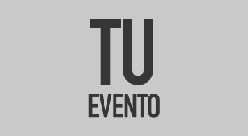
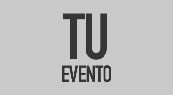
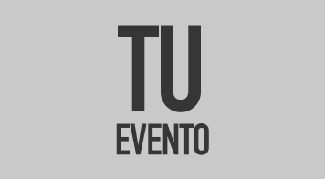

Solo encaramos proyectos donde nos podamos meter a fondo, donde podamos discutir con el cliente y crear juntos un producto de calidad.
No prometemos cosas que no podemos cumplir, pero cumplimos todo lo que prometemos.
Creemos que el desarrollo es un proceso colaborativo e iterativo que nunca se termina realemente, siempre queda algo en el tintero.
Maquetado y armado de web
www.rnc.org.ar
Revista NC es una publicación científica orientada hacia la psicología y la discapacidad intelectual. El proyecto inició con el deseo de cambiar el diseño de la página web de la publicación. Nosotros porpusimos un crecimiento que planteaba dejar de ocupar un espacio en la web y pasar a tener una herramienta, tanto de publicidad como de venta.
Aplicación para Android
Proyecto propio del estudio
En el marco de la Hackaton Sadosky 2014 desarrollamos una aplicación para asistir a las personas con discapacidad intelectual en el desarrollo de actividades de la vida diaria. Nuestro proyecto recibió una mención de honor de las autoridades del concurso.
Rediseño de la web
www.itineris.org.ar
La fundación ITINERIS se encontraba promoviendo ideas de vanguardia en el campo de la discapacidad. Lamentablemente, estas ideas venían acompañadas con una imagen institucional de principios de los '90s.
Nuestra propuesta fue revalorizar toda la organización y colocarla en un lugar de prestigio además de optimizar la web para un mejor manejo para las personas con discapacidad.
Web Profesional
Digitalización de Test Vocacional
La licenciada en psicología Macarena Martín necesitaba un medio de difusión para su práctica. Además quería incluir un extenso test vocacional que usualmente realizaba en papel. Nuestro acercamiento al proyecto fue el de priorizar la comunicación directa y sencilla y agilizar el proceso del test.
Nuevo Sitio Web
Diseño de folletería
Este grupo de personas con discapacidad intelectual busca difundir sus actividades en la Ciudad de Buenos Aires. Para ellos propusimos el desarrollo de folletería a presentar en distintos eventos, tarjetas personales y una fuerte presencia en la web.
Web de Servicios Profesionales
La emprendedora personal Daniela Galasso quería difundir un nuevo método de promoción empresarial. Algunos rasgos de su proyecto nos dieron las ideas justas para generar una web dinámica, y proactiva acompañadas de ilustraciones generadas para el mismo.
Web de difusión de eventos alternativos
Proyecto propio del estudio
No todos pueden, ni quieren, llegar a un acuerdo con las grandes empresas de venta de entradas online, la idea es ofrecer una alternativa gratuita y personalizada para todos
